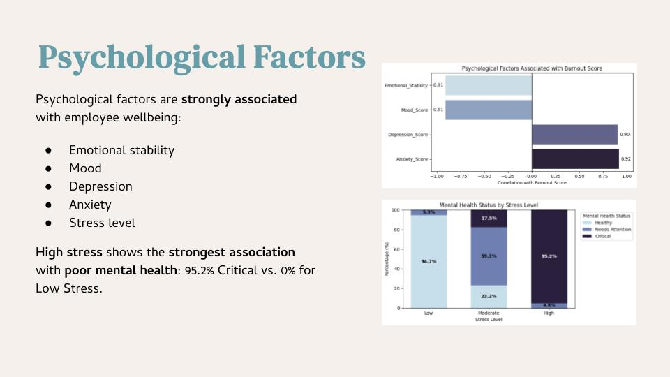

PROJECT 01 · HUMAN RESOURCE · PYTHON / TABLEAU
Employee Burnout & Mental Health Risk
Exploring factors associated with high burnout risk and critical mental health status.
50,000employee records
19.70%high burnout rate
21.07%critical mental health
96.89%ROC-AUC

Key findings
Psychological indicators showed strong associations with burnout. High-stress groups also had a high share of critical mental health status.
Methods
Data cleaning · EDA · Correlation analysis · Logistic regression
Interpretation
Associations do not establish causation.
PROJECT SOURCE
Explore the presentation, dataset, analysis, and dashboard resources for this project.